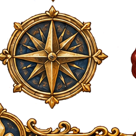

Moderna I
Transformações nos saberes, na organização do tempo e na circulação da informação.
← Voltar para o Menu Principal

Inovações
Johannes Gutenberg e a Invenção da Imprensa
Do Juízo Final ao futuro aberto